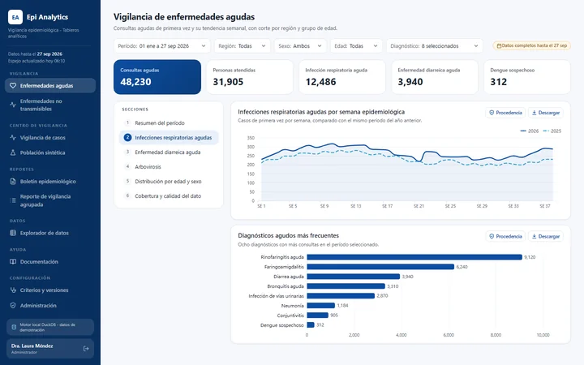
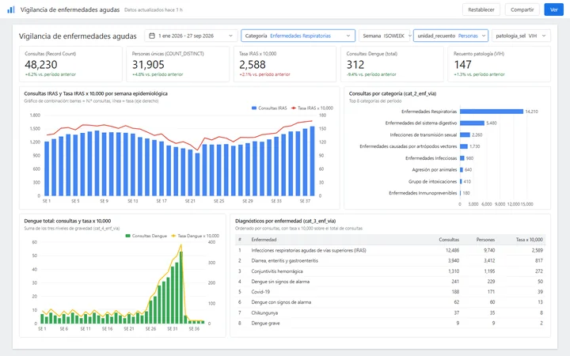
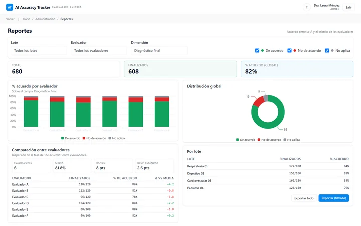
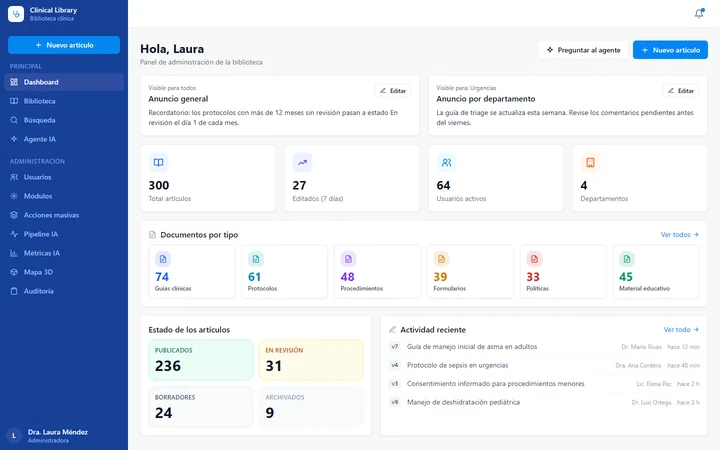
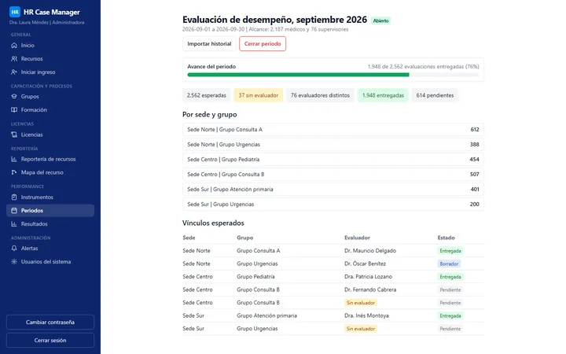

Rodolfo Vargas
Ingeniero de software e implementador de soluciones de IA.
Convierto requerimientos escritos en software probado y documentado, en el que las personas pueden confiar para tomar decisiones reales.
Cómo trabajo con IA Cinco casos Contacto
Ingeniero de software con experiencia en la construcción de plataformas de analítica, herramientas asistidas por IA y sistemas operativos para un servicio nacional de salud pública, utilizados por cientos de personas. El dominio cambia; la disciplina no: un requerimiento claro, un plan escrito, pruebas y evidencia de cada paso. Uso la IA para entregar más rápido sin ceder el control. Antes, un año en soporte de TI me enseñó cómo usan realmente el software las personas bajo presión.
La IA propone y ejecuta. Una persona decide, aprueba y responde por el resultado.
Entrega acelerada por IA, diseñada para generar confianza
La IA acelera la escritura. No decide, no aprueba ni responde por nada.
Los sistemas que se muestran a continuación se construyeron con desarrollo asistido por IA, dentro de un proceso en el que el requerimiento proviene de quienes usan el sistema, el plan lo redacta y lo aprueba una persona antes de escribir código, y cada avance deja evidencia que cualquiera puede verificar. Lo importante no es que se haya usado IA. Lo importante es que el resultado esté especificado, probado, revisado y documentado lo bastante bien como para que una persona pueda defenderlo.
- Una persona decide
- Paso escrito o automatizado
Humano en el circuito, en ocho pasos
- Un requerimiento de las personas que usan el sistemaEl trabajo parte de una solicitud o de un documento redactado junto con el área que necesita el sistema, no de una suposición.
- Una especificación escrita antes del códigoLa intención, el alcance y el diseño existen como texto que se puede leer, cuestionar y corregir antes de construir nada.
- Un plan aprobado por una personaEl plan enumera las decisiones que debe asumir un humano. El trabajo avanza solo dentro de lo decidido.
- Avances por tarea, cada uno con evidenciaUn avance se marca como terminado solo después de observar su resultado, y el resultado observado queda escrito junto a él.
- Cada cambio se revisaLas revisiones quedan registradas, incluso las que encontraron problemas.
- Las pruebas como compuertaNada se reporta como terminado por intención. Debe pasar una compuerta local, y cada salvaguarda se entrega con la prueba que demuestra que puede fallar.
- Las decisiones se fechan y se registranCada decisión se escribe con su motivo y la alternativa descartada, de modo que pueda defenderse meses después.
- Traspasos para que cualquiera pueda retomar el trabajoCada proyecto incluye un documento que permite a una persona o a una sesión nueva continuar sin reconstruir nada de memoria.
Cada paso cita solo los proyectos en los que consta. La evidencia de cada paso aparece en la página de cada caso, como rutas en repositorios privados.
Cinco casos
Las cifras corresponden a agosto de 2026, salvo que una fila indique otra fecha. La información de estas pantallas ha sido anonimizada.

Plataforma de analítica epidemiológica
Tableros, boletines y un centro de vigilancia servidos desde un espejo local, con costo de consulta cero y cifras auditables.
- 6 a 20usuarios
- 0costo en el almacén de datos por interacción
- 4.18 millonescitas, al 2026-08-24

Reportes en Looker Studio
Tableros y un informe escrito versionado para una unidad de epidemiología, además de un reporte horario del campus de capacitación, con la lógica conservada como texto.
- 2tableros, de condiciones agudas y crónicas
- 57páginas del informe escrito, versión 3
- Cada horaactualización del reporte del campus, por diseño

Seguimiento de la precisión de la IA clínica
Mide, caso por caso y bajo revisión médica, con qué frecuencia se sostiene una sugerencia diagnóstica de la IA.
- 75 a 90%concordancia entre la IA y los evaluadores
- 5,000 a 50,000casos evaluados
- 6 a 20evaluadores médicos

Repositorio de conocimiento clínico
Una fuente única y aprobada de guías médicas y de protocolos, con un asistente que responde a partir de artículos citados.
- 200 a 1,000artículos
- 400+médicos usuarios

Gestión de casos de recursos humanos
Todo el ciclo de vida de una fuerza laboral médica en un solo sistema, desde las rutas de contratación hasta las evaluaciones de desempeño.
- 2,562evaluaciones esperadas, a septiembre de 2026
- 2,187médicos dentro del alcance
- 76supervisores
Proyectos personales
Hechos en mi tiempo libre, de código abierto y en línea.

Cubo de Rubik, paso a paso
Una guía interactiva en 3D que enseña el método por capas del 3x3 y el método de reducción del 4x4, y puede resolver cualquier mezcla narrando cada paso. Demostración en vivo | Código fuente
- 3x3 y 4x4métodos guiados y resolvedor automático
- three.jsrenderizado 3D, sin framework
- Probadocada caso verificado por simulación

Guía de piano
Una aplicación web para aprender canciones en el piano: las notas caen sobre un teclado 3D con números de dedos, una partitura se desplaza en sincronía, y las herramientas de práctica repiten en bucle, reducen la velocidad y separan las manos. Los niveles Principiante y Original comparten un mismo modelo de datos, con lecciones y análisis armónico. Demostración en vivo | Código fuente
- Dos nivelesnotas rotuladas o partitura grabada
- Web Audio + three.jsun solo reloj controla el sonido, las teclas y la partitura
- 741 pruebasnotas verificadas contra la edición fuente
Conceptos de sitios web
Sitios web para negocios ficticios, creados para mostrar versatilidad y oficio. Los sitios de demostración están en inglés.

Txoko
Restaurante
Una parrilla vasca con carta completa, formulario de reservas y un fuego animado, en carbón cálido y rojo brasa. Ver sitio (en inglés)

Larkspur Family Dental
Clínica dental
Un sitio sereno para una clínica, con servicios, equipo, preguntas frecuentes y un formulario de citas que se completa con horarios disponibles de apariencia real. Ver sitio (en inglés)

Quarter Mile Coffee
Tienda en línea
Una cafetería con filtros por categoría, vista rápida y un carrito lateral funcional con cantidades y subtotal. Ver sitio (en inglés)
Servicios
Sitios web y software para negocios pequeños y en crecimiento. Cada proyecto recibe una cotización fija después de una llamada breve.
- Página de aterrizaje
- Una sola página para presentar un producto o servicio y captar clientes potenciales: formulario de contacto, diseño adaptable a móviles, SEO básico y analítica.
- Sitio web empresarial
- Un sitio de varias páginas con diseño a medida, blog o noticias, y un panel opcional para que su equipo edite el contenido sin programar.
- Tienda en línea
- Catálogo, carrito, pagos con tarjeta, inventario y correos de pedidos.
- Tableros y automatización
- Sus cifras clave en un solo tablero, además de reportes automáticos, recordatorios y alertas que ahorran horas cada semana.
- Software a medida y asistentes de IA
- Aplicaciones web construidas alrededor de sus flujos de trabajo, y asistentes de IA que muestran de dónde proviene cada respuesta y esperan a una persona antes de actuar.
- Mantenimiento mensual
- Actualizaciones, copias de seguridad, cambios pequeños y soporte después del lanzamiento.
Siempre incluido
- Diseño adaptable a móviles, SEO básico y accesibilidad.
- Dos rondas de revisiones.
- Dominio, alojamiento y cuentas configurados a su nombre.
- Propiedad total del código una vez pagado el proyecto.
Cómo funciona
- Una llamada breve para entender lo que necesita.
- Una propuesta escrita con alcance, calendario y precio fijo.
- Diseño y desarrollo, con una vista previa que puede revisar durante el proceso.
- Lanzamiento, traspaso y mantenimiento mensual opcional.
Stack
- Backend
- TypeScript con NestJS y Next.js (Server Actions); Python 3.12 con FastAPI; Google Apps Script para un producto de primera generación; Kubernetes CronJob para un trabajo horario de reportes.
- Datos
- PostgreSQL 15 y 16 con pgvector, Prisma, SQLAlchemy y Alembic; DuckDB, Parquet y dbt para espejos analíticos de un almacén de datos en la nube; BigQuery y Google Sheets como fuentes de Looker Studio.
- IA
- Respuestas aumentadas por recuperación (RAG) con Vertex AI (Gemini 2.5 Flash y embeddings de 768 dimensiones), más un banco de preguntas curado y aprobado por un auditor.
- Reportería
- Looker Studio con campos calculados y parámetros sobre BigQuery y Google Sheets; Python y Colab para la limpieza de datos; docx-js para informes de Word versionados.
- Frontend
- React 18 y 19, Vite, Tailwind CSS, shadcn/ui, Apache ECharts y Recharts.
- Calidad
- Vitest, Jest, pytest, Playwright, ruff, mypy en modo estricto, Biome, ESLint, commitlint y Husky.
- Entrega
- Docker y Docker Compose, Cloud Run y Cloud SQL como destinos de despliegue, flujos de CI con verificación de vulnerabilidades en las dependencias.
Las versiones exactas aparecen en la página de cada caso.
Formación y aprendizaje actual
Formación académica
Ingeniero en Desarrollo de Software, Universidad Francisco Gavidia.
Aprendizaje en curso
HL7 FHIR. Estoy preparando la certificación Foundational Implementer, como primer paso hacia Advanced Developer.
Por qué ahora: ya trabajo con datos clínicos que otros sistemas necesitan leer, como citas, diagnósticos y protocolos, y FHIR es el estándar para intercambiarlos.
Ingeniería de datos en Google Cloud. Estoy preparando la certificación Professional Data Engineer.
Por qué ahora: mi trabajo en plataformas de analítica replica un almacén de datos en la nube en DuckDB y Parquet y lo modela con dbt, que es la ingeniería de datos que cubre esta certificación.
Contacto
- GitHub: github.com/rodolVargasdev
- Correo electrónico: rodolfovargasoff@gmail.com